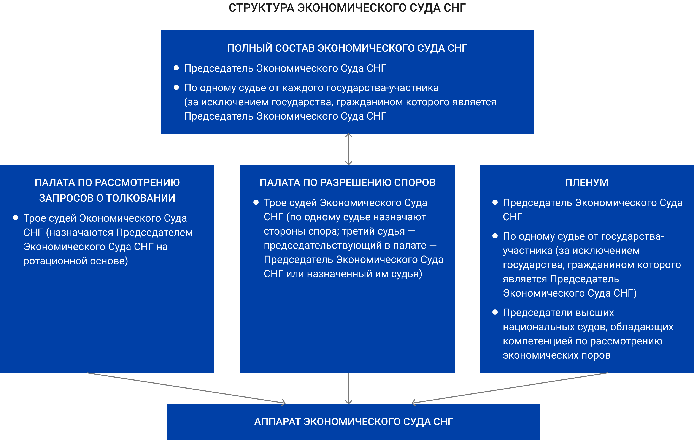

Структура
Экономический Суд Содружества Независимых Государств в соответствии с Положением об Экономическом Суде Содружества Независимых Государств (в редакции Протокола от 13 сентября 2017 года о внесении изменений в Соглашение о статусе Экономического Суда Содружества Независимых Государств от 6 июля 1992 года) действует в составе палат (по разрешению споров и по рассмотрению запросов о толковании), полного состава и Пленума Экономического Суда Содружества Независимых Государств.
Для рассмотрения спора по заявлению заинтересованного государства Председателем Экономического Суда формируется палата, состоящая из трех судей. Каждая сторона спора назначает в палату по одному судье из реестра судей. Третьего судью палаты, выполняющего функции председательствующего в палате, назначает Председатель Экономического Суда или выполняет эти функции самостоятельно.
Полный состав Экономического Суда рассматривает жалобы на решения палат Экономического Суда по вновь открывшимся обстоятельствам, по вопросам правовой квалификации выносимых решений в порядке, установленном Регламентом Экономического Суда. Полный состав Экономического Суда назначается Председателем Экономического Суда из судей, входящих в реестр судей Экономического Суда, по одному от каждого государства-участника. Государство-участник, судья которого избран Председателем Экономического Суда, представляется в полном составе Экономического Суда только Председателем.
При обжаловании решения палаты Экономического Суда по вопросам правовой квалификации решения в полный состав Экономического Суда включаются судьи, не принимавшие участия в рассмотрении дела, решение по которому обжалуется, за исключением Председателя Экономического Суда.
Для рассмотрения запросов о толковании Председателем Экономического Суда формируется палата, состоящая из трех судей. Судьи для рассмотрения запросов о толковании назначаются в палату Председателем Экономического Суда на ротационной основе. Председательствующий в палате определяется в порядке, предусмотренном Регламентом Экономического Суда.
Высшим коллегиальным органом Экономического Суда является Пленум. Пленум состоит из Председателя и судей Экономического Суда по одному от каждого государства-участника, за исключением государства, гражданином которого является Председатель Экономического Суда, а также председателей высших национальных судов, обладающих компетенцией по рассмотрению экономических споров.
